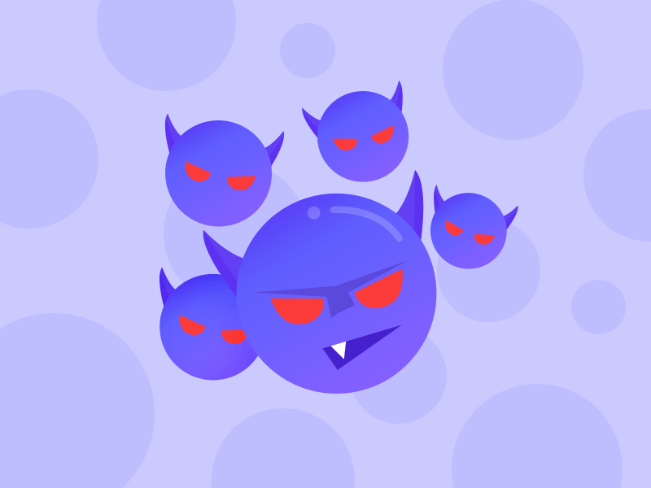

这种传播方式最简单的解释就是通过空气传播。如果有人患上了奥密克戎毒株，这些带有奥密克戎毒株的患者，在咳嗽、呼吸等的过程中都会喷出带有病毒的飞沫，所以在这时没有戴口罩的人再次经过就很容易中招。

患有奥密克戎的病者，如果触碰到了周围的物品，也会在物品上留有病毒。这是身体健康的人也触碰到了带有病毒的物品，也同样会被感染。
气溶胶传播简单的解释就是通过粪便的传播，这种传播方式也是最新发现的一种传播方式。如果和携带有奥密克戎毒株的患者生活在一个小区或地方，该地区的下水道就有可能会带有奥密克戎毒株。简而言之，就是该区域的水资源就有可能会被污染，带有奥密克戎毒株。